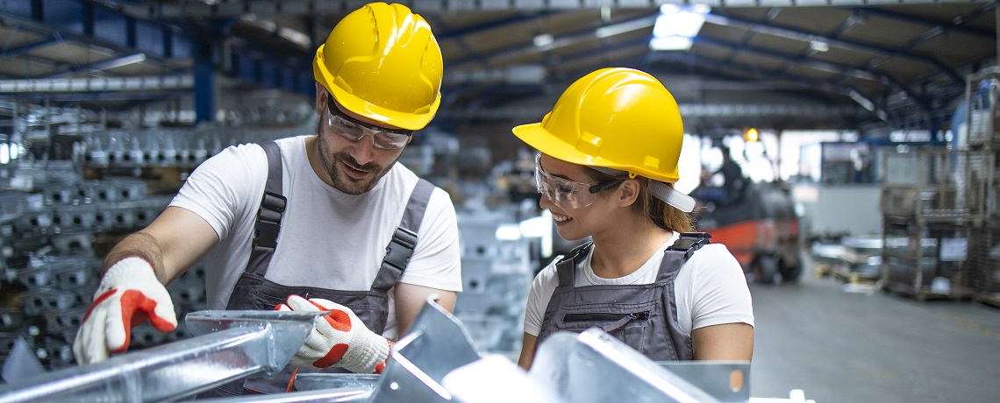
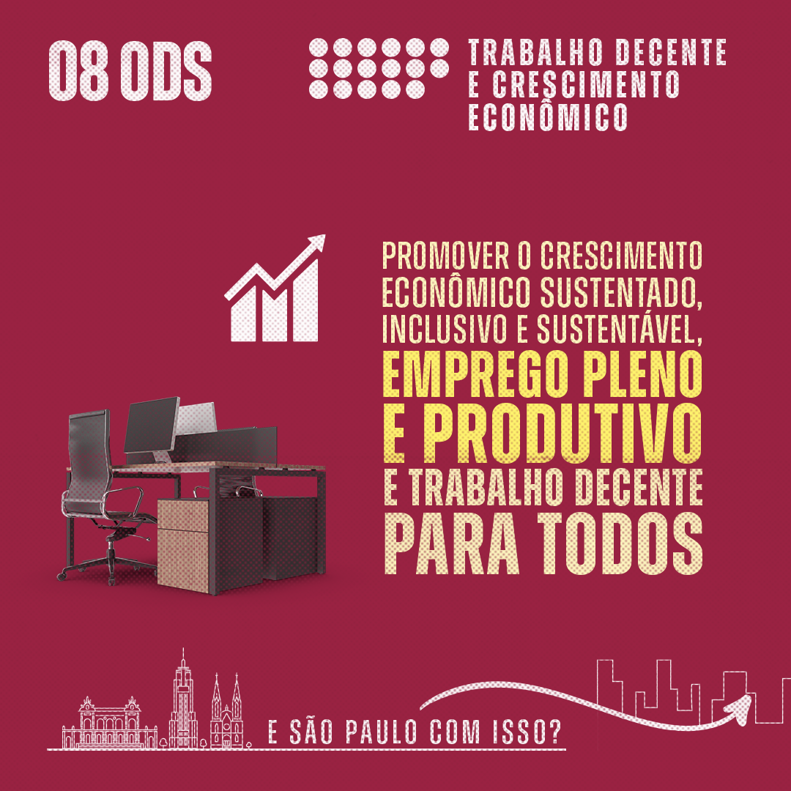

Como visualizar e/ou aplicar a ODS 8 (Trabalho descente e crescimento econômico) na escola
- Como visualizar e/ou aplicar a ODS 8 (Trabalho descente e crescimento econômico) na escola
- Entendendo o ODS 8! | As Aventuras de Nina
- exemplos para o objetivo do tema
tópicos:
 Primeiramente, é importante que os alunos conheçam a ODS 8 e sua importância. O começo pode ser com uma apresentação do objetivo e suas metas. As escolas podem promover a educação para o empreendedorismo, desenvolver projetos em que os alunos trabalhem em questões relacionadas ao objetivo, como a criação de uma cooperativa escolar, simulação de uma empresa, planejamento financeiro, incentivo à criação de empresas locais, entre outros. Além disso, é possível mostrar aos alunos que ter uma empresa que seja economicamente viável e que também tenha um impacto positivo no meio ambiente e na sociedade não é tão difícil quanto alguns acreditam que seja. Os professores podem usar empresas sustentáveis como exemplo em suas aulas. Outra sugestão é permitir que os alunos das escolas, possam fazer cursos profissionalizantes/técnicos e também criar bolsas de estágios para os mesmos. Desse modo desde jovens esses alunos estarão sendo preparados para ingressar no mercado de trabalho com habilidades específicas em uma determinada área, tendo uma maior probabilidade de se sentirem satisfeitos com o seu trabalho, pois eles foram treinados em uma área que eles gostam e na qual têm interesse. Mais do que apenas transmitir conteúdos, a escola é um espaço onde os alunos aprendem atitudes, valores e habilidades. Por isso, abordar o desenvolvimento sustentável na escola é uma maneira de contribuir para a formação de pessoas mais conscientes e que irão ajudar a construir um mundo melhor. Esses são apenas alguns exemplos de como a ODS 8 pode ser aplicada na escola. O importante é que os professores e alunos estejam comprometidos com objetivo e trabalhem juntos para promover o crescimento econômico sustentável e inclusivo.
Entendendo o ODS 8! | As Aventuras de Nina
Exemplos para o objetivo tema
- Um banco internacional oferece serviços de financiamento especiais para empresas em crescimento e startups em países menos desenvolvidos para ajudar a aumentar o emprego local e contribuir para a elevação das comunidades pobres.
- Uma empresa internacional de alimentos se compromete a obter uma porcentagem significativa de sua matéria-prima de pequenos agricultores em países em desenvolvimento para aumentar o emprego local.
- Uma empresa de vestuário implementa programas para aumentar a capacidade dos fornecedores de pagar um salário digno e promove o uso de pagamentos digitais para garantir que o progresso possa ser devidamente rastreado e avaliado.
- Uma empresa de recursos globais implementa mecanismos para rastrear, prevenir e abordar a violação dos direitos trabalhistas em toda a cadeia de suprimentos, incluindo o agrupamento de dados e o uso sistemático de avaliação de impacto sobre os direitos humanos para entender os riscos existentes nos níveis de país e setor.
- Uma empresa de recursos globais implementa mecanismos para rastrear, prevenir e abordar a violação dos direitos trabalhistas em toda a cadeia de suprimentos, incluindo o agrupamento de dados e o uso sistemático de avaliação de impacto sobre os direitos humanos para entender os riscos existentes nos níveis de país e setor.
- Uma empresa de brinquedos faz parceria com escolas e instituições de ensino superior para lançar um programa sobre “meninas nos campos STEM” para impulsionar o crescimento, aumentando a participação feminina na força de trabalho. • Uma empresa desenvolve tecnologia para usar resíduos plásticos para gerar energia limpa, atendendo tanto o objetivo de sustentabilidade quanto o de acesso à energia.
- Uma empresa de contabilidade oferece estágios e oportunidades de emprego direcionados a jovens em situações de vulnerabilidade. Além disso, envia seus funcionários para trabalhar como voluntários em escolas para melhorar os resultados educacionais e a empregabilidade.
- Uma fabricante de computadores contrata trabalhadores de baixa renda de diversos setores, cujos empregos provavelmente serão automatizados, e os treina em programação. Assim, eles ganham oportunidades em áreas emergentes, como gerenciamento de segurança cibernética, operações de plataforma em nuvem e desenvolvimento de aplicativos móveis.
A Comissão da Mulher e da Advogada, por meio de suas integrantes, participou de debate sobre fomento do ativismo social e crescimento econômico sustentado e sustentável para pessoas vulneráveis.
Segundo a Constituição Brasileira, o trabalho é um direito fundamental. Mesmo assim, dados do Instituto Brasileiro de Geografia e Estatística (IBGE) mostram que o Brasil tem, pelo menos, 11 milhões de desempregados.
Promover o crescimento econômico sustentado corresponde ao 8° dos Objetivos de Desenvolvimento Sustentável (ODS) criados pela Organização das Nações Unidas (ONU) para cumprir com os acordos feitos na Agenda 2030.
Neste texto vamos falar sobre um assunto relacionado ao ODS nº 08 – Trabalho Decente e Crescimento Econômico –, que tem como meta principal promover o crescimento econômico sustentado, inclusivo e sustentável, o emprego pleno e produtivo e o trabalho decente para todos.